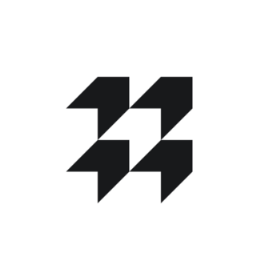

Hello! My name is Guillaume and I'm a Software Engineer at Memo Bank
I'm currently working at Memo Bank, helping them build a brand new European bank for SMEs. These days I'm working on our banking core, which is responsible for handling everything between our ledger and our customers.
Before joining them, I was at Ditto Services building a white label open banking solution, at ReachFive helping to build & scale their CIAM solution and before that at Zengularity where I had the opportunity to learn plenty and meet a lot of talented people.

Functional programming advocate since my time at Zengularity and ardent defender of « Software craftsmanship », I spent the last 5 years solving diverse technical and business challenges with a common goal: offer the best solution within the limits of the resources involved.
I think that the quality of piece of a code is never optional, and is a reflection of the intrinsic quality of the provided solution. I thus strive to always come up with a solution that I can be proud of.
Where did I work? 
-
Memo Bank Software EngineerKotlin Elixir TypeScript Distributed Architecture Kafka PostgreSQL
Memo Bank has a simple but ambitious goal: to create a new European banking establishment from scratch, to provide SMEs with the financial products and advice they deserve.
Three years after its creation, Memo Bank has obtained the green light from the Autorité de contrôle prudentiel et de résolution (ACPR) and the European Central Bank (ECB) to launch its offer, becoming the first independent bank to emerge in France for 50 years.Creation of a core banking system from scratch, using modern and secure technologies, ensuring that our banking system complies with all the auditability, security and performance constraints to which banks are subjected to. Integration with other external tools to communicate with other banks.
Event sourcing is used for the ledger, responsible for handling and validating all account operations, to ensure a total auditability and strong consistency of our data. Automatic export of this data in regulatory reports is also made possible by this approach.
Project developed in Kotlin (Spring, Hibernate) & Elixir (Ledger part) with PostgreSQL as our main database, ActiveMQ as our messaging queue and Kafka as our message broker.
Ditto Services Software EngineerFP Scala Kafka Event streaming Nano-servicesThe Ditto Services Open Banking platform aims to allow companies to focus on their core business by giving them access to a full range of easily integrated banking APIs, and thus develop the most innovative customer journeys.
Thanks to the partnership with the sister company Travelex Bank, a credit institution approved by the l’Autorité de Contrôle Prudentiel et de Résolution, they are developing the latest generation technological platform for the digital bank of tomorrow.Creation of the Ditto Services new generation platform from scratch, using a nano-services based architecture, communicating exclusively with event-streaming, ensuring maximum decoupling between the different functional bricks.
Project developed in Scala (Akka-http, Akka-actor, Cats, Fs2, Doobie, Cats-Effect) with PostgreSQL as our main database on each nano-service, and Kafka as our message broker.
ReachFive Lead developerFP Scala TypeScript ElasticSearch Redis KafkaThe Customer Identy and Access Management (CIAM) solution of ReachFive enables companies to have a complete and secure management of their customers across all their points of contact, online and offline.
Strengthening of the codebase, structuring development (code reviews, continuous integration & clean code), launch of various refactoring projects to reduce technical debt and implementation of the latest features to provide a complete CIAM solution to our customers (Boulanger, Engie, Lacoste, etc.).
Project developed in Scala (Play Framework, Shapeless, Cats) and TypeScript (React), with ElasticSearch & PostgreSQL as our databases.
Zengularity (Fabernovel since 2019) Software architectFP Scala TypeScript PostgreSQL MongoDBZengularity (who joined the Fabernovel family in 2019) is a French company specializing in digital transformation and the web of tomorrow. Adept of new technologies, they offer adapted and modern solutions to companies wishing to carry out their digital revolution.
Zengularity is also the birthplace of the Play Framework, known worldwide and used by the largest companies.Development of a web platform facilitating the communication of the various parties in the insurance business, in order to support them in their digital transition. Made using event sourcing to reflect the state changes of an insurance mission, and to provide an auditable history.
Project developed in Scala (Play Framework, Shapeless & Scalaz) and TypeScript (ReactJS, Flux & Less), with MongoDB as our main database.
Development of an onboarding platform for the BNP Banking group, in order to digitize a lengthy and complicated paper process, and support them in their digital transition.
Project developed in Scala (Play Framework & Cats) and TypeScript, using Oracle DB as our main database.
ESGI Freelance teacherVersion Control Continuous Integration & Deployment Tooling Clean codeFounded in 1983, the ESGI school trains its students in software developments to match the expectations and needs of companies in a very dynamic and moving sector.
Course on the « developer Tools » given to 3rd year students specializing in Software Architecture.
Version management software (git, github, gitlab), git related workflows, clean code and related tools (linters), and an introduction on continuous integration.
Alter-Frame DeveloperJava JEE JavaFX SpringAlter Frame is Alter Solutions group’s software publisher and development structure. This structure aims to bring quality as an added value in the realization of full-web solutions and in the development of IT projects.
Development of a new tools within an existing software suite for the French car manufacturer PSA. A battery and alternator sizing tool (used to size electrical component according to the car's configuration and target climate), and an electrical diagram designer software.
Code audit of a Java application (JEE & JBE) made for managing customers and contracts, for the French credit insurance company Euler Hermes.
Realization of a satellite data visualization application (from plain file data) plotted on a two-dimensional projection of the earth for Eutelsat, with the goal to display satellite coverage on earth in a comprehensive way.
Scality Developer (internship)C Language Python Robot Framework JenkinsScality is a pioneering innovator of file & object storage, multi cloud data storage. Offering best scale out and multi cloud data management solutions. The Scality RING, their main product, is a scale-out object storage software platform that delivers petabyte-scale software-defined storage designed to run on commodity hardware. Therefore, providing cost-effective scaling, performance, and auto-recovery.
Intervention on Scality's flagship project, the RING (a very high capacity and very high availability storage solution), on its implementation of unit tests and associated metrics (reports, code coverage).
Choice and implementation of a unit testing framework for a C language based software, with adaptation of compilation targets, porting of existing tests, and addition of new unit tests.
What do I know ?
Software Architecture Stateless and reactiveMicro-services Reactive Stateless Distributed SystemsI had the opportunity to see many ways of responding to different technical challenges about the architecture of a software or system ; ranging from a heavy client, a simple stateless web application, or even services communicating by messages to an event streaming system composed of hundreds of nano-services.
I was finally able to implement for the first time what I had learned at ReachFive, where the existing monolithic software was modularized into services. I thus had the opportunity to reduce interdependencies to a minimum and end with almost independent specialized modules. Some services would then be added following the same model (for example an asynchronous worker, unstacking tasks ready to be performed). This was done along with a more classical refactoring of the codebase to reduce and contain the technical debt.
Ditto Service and Memo also share this same service decoupling approach, but have different way of overcoming that challenge. Where Ditto has made the choice of using function-sized nano-services, Memo made the choice of a breakdown by domain; both using a message broker to propagate actions in their respective systems.
Scala Functional Programming FP Lightbend (Akka) Typelevel (Cats, Shapeless, Doobie) Scalaz sbt macro
FP Lightbend (Akka) Typelevel (Cats, Shapeless, Doobie) Scalaz sbt macroScala is a general-purpose programming language providing support for both object-oriented programming and functional programming. The language has a strong static type system. Designed to be concise, many of Scala's design decisions are aimed to address criticisms of Java.
Functional programming brings additional security to compilation, allowing to rely solely on static validation where Java, for example, often has to rely on testing in addition to compilation to validate a piece of code. This paradigm allows to think differently about writing code, and result in a clear and declarative code, representative of your intentions.
After discovering Scala (and more broadly functional programming) in school, I had the opportunity to build up my knowledge during my time at Zengularity, where I learned how to get the best out of it from the same people actively participating in the life of the language ecosystem.
I then had the perfect occasion to use my newly acquired knowledge at ReachFive and then later at Ditto Services to build applications that are both complex (due to their respective functional scope) and robust, by relying on the Scala language, its paradigm, and as well on the entire ecosystem that revolves around.
TypeScript & JavaScript Backend & Frontend NodeJS Express Webpack React, Redux HTML, CSS
NodeJS Express Webpack React, Redux HTML, CSSTypeScript is an open-source language which builds on JavaScript, one of the world’s most used tools, by adding static type definitions.
In addition to providing typing, TypeScript also allows for a more descriptive approach to be explored in the way of building applications (for example along with React which also use a declarative way of defining components).
I used it extensively in frontend development (along with JavaScript) to build many web applications, of varying sizes and scopes. TypeScript gave us the consistency necessary to work in team on a large codebase with a complex functional domain.
Finally, I also had the opportunity to use it on the server side with NodeJS on many personal projects. Easy to set up and quick to develop, typing ensures code clarity and longevity. Finally, the JavaScript ecosystem ensures that many libraries are mature enough (and for the most part already typed) to be production ready.
Kotlin & Java Software Engineering Spring Boot Vert.x JEE Hibernate, JPA Swing, JavaFX Android
Spring Boot Vert.x JEE Hibernate, JPA Swing, JavaFX AndroidKotlin is a cross-platform, statically typed, general-purpose programming language with type inference. Kotlin is designed to interoperate fully with Java, with a more concise syntax thanks to type inference.
Like Scala, Kotlin is also positioned as a « better Java », borrowing notions of functional language while remaining strongly object oriented by nature. Unlike Scala, it is positioned closer to Java in its philosophy, and is not intended to be a functional language (even with the borrowed syntax). Interoparability with Java also helps to make the transition between the two languages as transparent and quick as possible.
After having spent almost 2 years of Java during my work-study program and having quickly abandoned this language in favor of Scala, I had the opportunity to discover and learn Kotlin at Memo Bank. Easy to approach after having used Scala, the language corrects many Java limitations and flaws due to its more modern approach and stronger typing.
Kotlin allows us at Memo to represent a complex business domain (as banks often are) in a clear and robust way, maintaining a high-quality code. The interoperability with Java libraries allow us to take advantage of a rich and mature ecosystem, ensuring the best of both worlds.
Databases SQL & NoSQL SQL (PostgreSQL, Oracle DB) ElasticSearch MongoDB Redis
SQL (PostgreSQL, Oracle DB) ElasticSearch MongoDB RedisI've used SQL database in almost all my projects, from MySQL when I was still learning the ropes, to Oracle DB for larger companies when I was at Zengularity to PostgreSQL at Memo ; in application ranging from a REST service to a core banking system.
I had the chance of using MongoDB for the first time at Zengularity in a particularly challenging application, using event sourcing to trace all modifications. Mongo brought us a lot of usefull features (like being document oriented, allowing us to direclty use JSON, along with the scaling promises), altough with a few drawbacks (mainly not being able to have relationships nor ebing able to efficiently lock a document like SQL bases usually allow it)
I had a more mixed experience with ElasticSearch, as I sadly saw it used as a main database, bringing issues on the data consistency (as ES is by default eventually consistent) and on its performance (since they had to force the refresh after each operation). Fortunately, we use it as intended at Memo to index and build a search engine for our frontend application, where it can finally show all its power.
DevOps Docker & Continuous IntegrationDocker, Docker compose Terraform Linux Jenkins, Hudson, Circle-ci SonarQubeAt my current job and on my personal projects I mainly use Docker to define isolated and easily deployable work environments, allowing to replicate an architecture and associated services locally. I also had the opportunity to define containers used in production in a Kubernetes during my time at Ditto Service.
I also had the opportunity to work on the Jenkins configuration on some projects, whether simply on continuous integration or on continuous deployment. I also used Circle-ci and Travis for similar purposes.
Finally, I take care of my Linux server myself, more by hobby than by necessity, using Docker to isolate my different services. This server host, among other things, the page you're currently reading.
Where did I study?

-
Master's degree in Software Architecture ESGI
« Titre niveau I d'expert en ingénierie de l’informatique et des systèmes d’information »
The Software Architecture specialization at ESGI is an expert training on the design methods and realization of software solutions meeting the complex needs of companies from all the sectors (finance, industry, IT services companies, software publishers, etc.).
Bachelor's degree in Software Architecture ESGI« Titre niveau II de chef de projet logiciel et réseaux »
The Bachelor Degree at ESGI specialized in Software Architecture allows students to acquire operational skills through numerous educational projects, while acquiring theoretical software architecture skills (languages, UML modeling, databases).
Baccalauréat École notre Dame ProvidenceBaccalauréat Scientifique
Any personal project to show?
Cumulus Secure File Storage ServerScala Akka HTTP Akka StreamsFile storage server made in Scala with Akka-http. Stored files can be compressed and encrypted. Files can also be streamed, making it possible to stream videos via HTML5 for supported formats (MP4, Webm).
The various operations on the files were carried out with Akka-stream, using custom Flows allowing to (de)compress and/or (de)encrypt files on the fly.
These files are organized in a tree structure supporting all the classical operations (move, delete, etc.) allowing them to be organized like a classic file system.
The tree structure is flattened in a PostgreSQL database, in order to avoid any recursion or performance constraints.
Raspi-sensor Node.js C++ PluginRapsberry Pi C++ Node.jsNodeJS plugin made in C ++ allowing in JavaScript to collect data from different sensors connected to a RapsberryPi. Currently DHT22 (temperature and humidity), BMP 180 (temperature and pressure), TLS261 (brightness) and PIR (infrared sensor) are supported.
The plugin adopts an asynchronous operation dear to JavaScript, and offers a one-of recovery mode or at regular intervals.
Show Me Image hostingNodeJS React Redux TypeScriptImage hosting service made exclusively in TypeScript. It allows to upload images with tags, to serve them and finally to search them by tags or name.
The frontend was made with the MaterialUI library (react), and the logic implemented using Redux and Thunk for asynchronous operations.
The backend is also in TypeScript, using Express for it controller and PostgreSQL for persistence. Sharp is used for operations on images.
Vuziks Scripting languageC Language Lexx/YaccScripting language and its interpreter, made in C with Lex and Yacc. Built with an interactive mode, conditions, loops, functions and objects.
© Guillaume Villerez - All rights reserved.